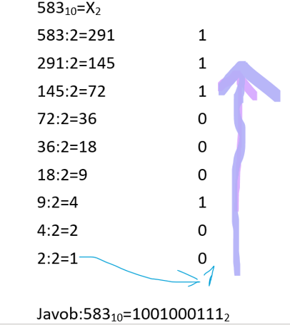

Sanoq sistemasi oddiy qilib aytganda kompyuter biladigan til. U til 0 va 1 raqamlaridan iborat bo'ladi. Kompyuter bizni tilimizni tushunmagani uchun odamlar shu tilni ixtiro qilishgan.
Mana uning ko'rinishi
Shu tariqa hamma raqamlar, harflar, so'zlar, jumalalar va boshqa narsalarni kompyuter o'z xotirasiga saqlaganda, bularning hammasini 0 va 1 larda saqlaydi va bizga ko'rsatayotganda yana o'z ko'rinishida ko'rsatadi. Raqamlarni saqlayotganda 01 lar qancha ko'p son ham shuncha kattalashaveradi!
10 likdan 2 lik ga o’tish. Yani oddiy raqmdan kompyuter tushunadigan tilga o’tish:
Misol uchun:

2 likdan 10 likga o’tish.Yani komputer tilidan yana oddiy tilga o’tish.